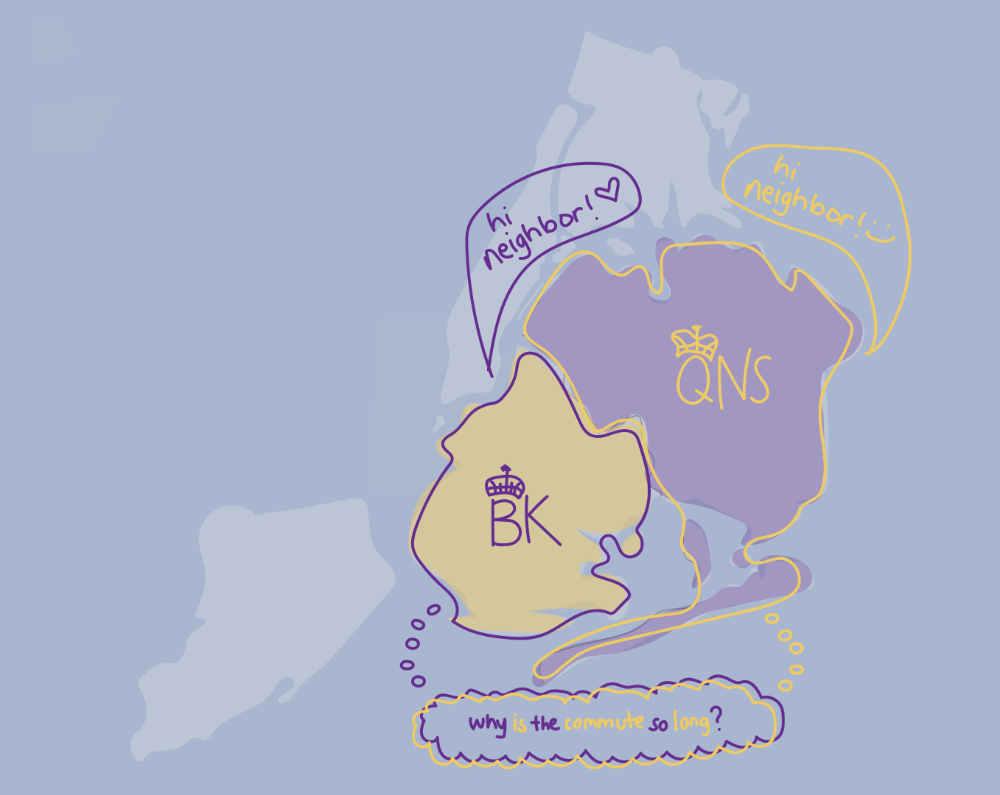
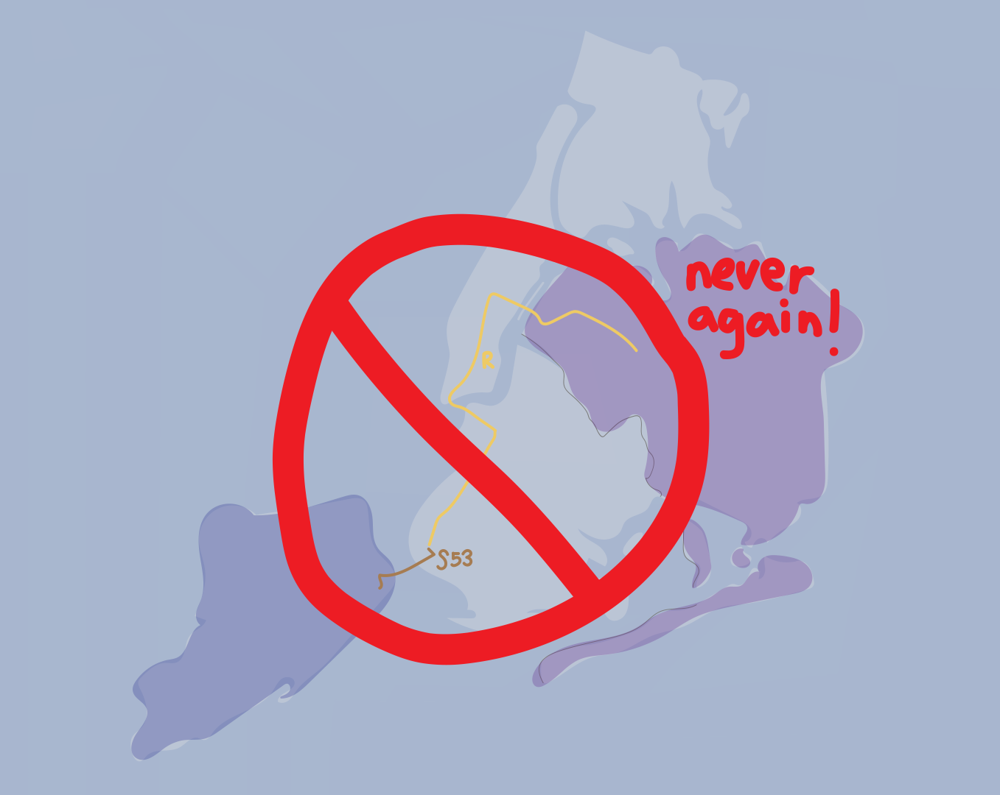
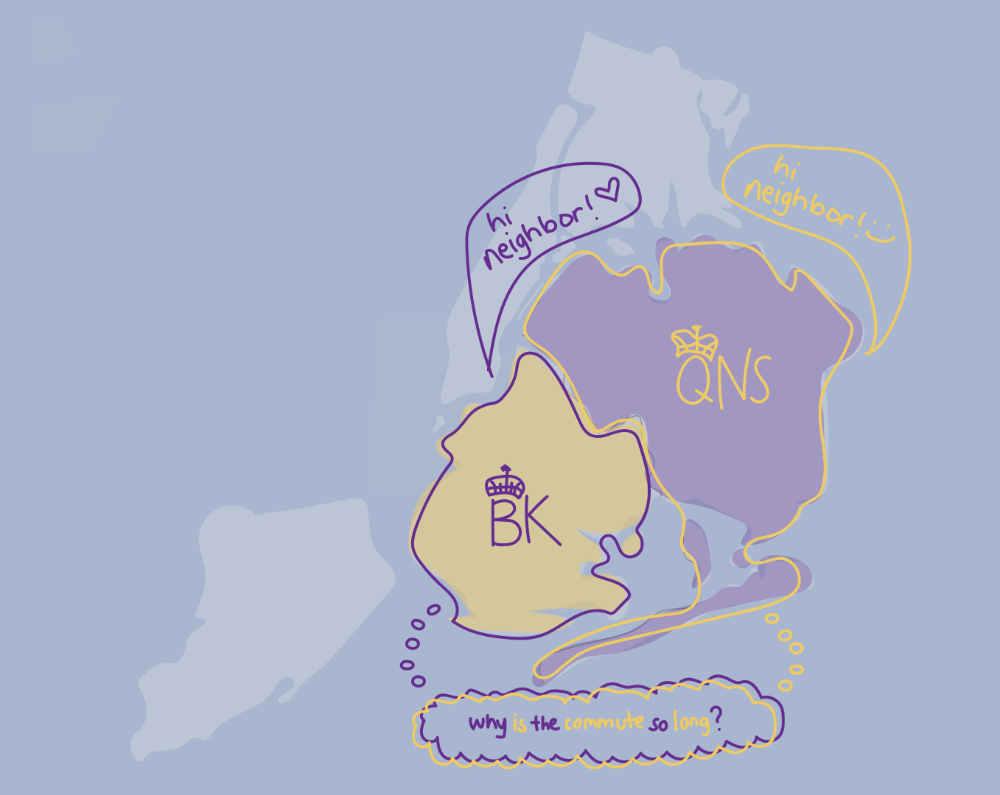
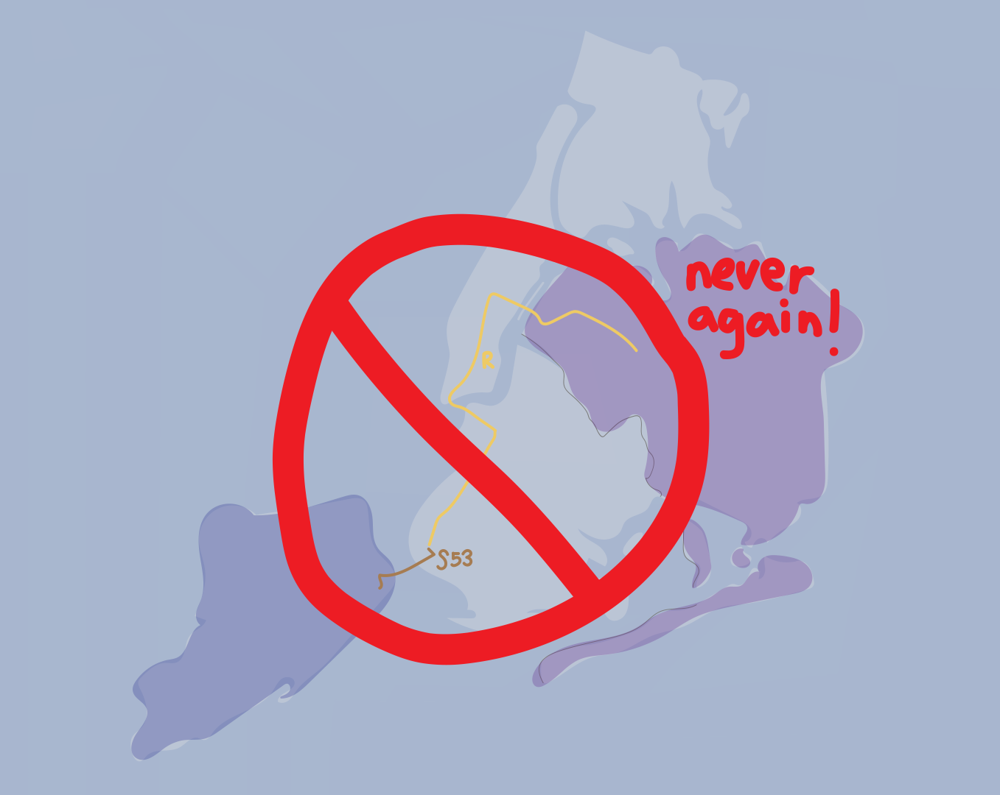

I am Queens, Manhattan, the Bronx, a little Brooklyn, and slightly Staten Island.
Born and raised in New York City, my very first home was a house in Elmhurst with my extended family. I ran around screaming and playing here for 2-3 years before my parents decided that it was time to make the move to the famous Manhattan.
In Manhattan, you could find me walking and exploring all of downtown. I lived by the South Street Seaport, but I was constantly on the move to get to school. Manhattan was where my career as a professional commuter began.
The first daily trips that I had to make were with my grandpa. Every weekday, he and I would walk hand in hand to a Pre-K in Chinatown. At first, he would bring a stroller to prepare to push me around in case I got tired, but over time I refused to be treated like a baby and made him ditch the stroller on our way out.
When I finally finished Pre-K, I began elementary school, shifting my commute entirely. I attended PS234 all the way on the other side of the island in Tribeca. At the time, there were no other public school options around the Financial District and Seaport Area, so many of the other students from this area would take the cheese bus with me. We waited everyday on Fulton Street by what used to be a Burger King with a Foot Locker downstairs. On cold, snowy days, there would be times when the bus didn’t make it to our stop and we would all hustle into shared taxis or the back of a parent’s car to rush over, hoping we’d still make it on time. Elementary school was thrilling because I learned to travel alone and together at the same time. This was my first introduction to NYC commute culture – and, frankly, I loved it.
In the fourth grade, my parents sat my sister and I down with some life changing news: “Carmen, Alison, we’re moving to Queens!”
This news didn’t phase me because I thought it would be cool to be somewhere different. With the anticipation of such a large imminent change, my sister, Carmen, made sure that my parents would promise that we wouldn't switch schools if we moved. This led to my first real NYC commute experience.
Our move brought us back to our Elmhurst roots – three blocks from where it all began for me. Back in Elmhurst, my family lived on the 2nd floor of a house by the dead end of a street. At this house, I began to commute by myself.
Every morning, I would walk to the Grand Avenue station, slide my orange elementary school Metrocard, and ride the R straight down to the City Hall station in Manhattan. One day, on the ride home with my dad, I let my guard down and fell asleep. Deep in my dreams, I found myself falling forward and hitting my head hard on the dirty R train floor.
**THWACK**
For the next two weeks I had the biggest bump on the top of my forehead. I had to constantly explain to everyone at school what had happened. My dad thought this was the funniest train story. He still laughs about it today.
After I graduated from PS234, I found myself attending middle school one block away, across the West Side Highway, at IS289. This didn’t change my commute much, but as I leveled up to the new green middle and high school Metrocard, I found myself doing the same with my commuting abilities. Instead of taking the R train straight to Grand Avenue, I began varying my trips, trying to find the fastest way home. The trip I decided was my favorite was taking the E train from Chambers Street to Roosevelt Avenue in Jackson Heights, where I would transfer to an M or R to take for two stops back to Grand Avenue. In addition, in middle school, my peers lived in various parts of lower Manhattan, so I began exploring new areas from SoHo to the West Village.
At the end of middle school, my parents once again sat my sister and I down to tell us some news: “Carmen, Alison, we’re moving to Middle Village. The house is across the dead end, not too far away from where we are now. It’s a far walk from the subway, but you can take a bus, so you don’t have to walk as much!”
After my parents took Carmen and I to tour the new house, our newly rebellious teenage selves were so upset by the prospect of change that we collectively decided to protest the move. We were comfortable with our Elmhurst home and hated the idea of a foreign space farther from the train. Thinking we were mature but really acting the exact opposite, we threw tantrums, insisting that our parents were out to ruin our lives. Despite Carmen and I’s disapproval, the move still happened.
The next thing I knew, our dad was guiding us to show us the various ways to get to our new home. Each option had its own trade off; none of them were perfect.
I complained for months about this new commute but I eventually got used to it. And with the commute, the house eventually grew on me as well.
This new home housed some of the biggest changes in my life. It was where I began high school at Bard in Long Island City. From this new school, I would either take two buses to get home, or I would get on the 7 or E from 33rd Street or Queens Plaza, respectively, and transfer onto a bus or the M or R at Roosevelt Avenue.
At Bard, I ended up becoming friends with students who lived in Brooklyn. This led me to begin exploring a new borough after school and on the weekends. From this exploration, I discovered each commute option between Queens and Brooklyn via public transportation took an unusually long amount of time despite the fact that the two boroughs are right next to each other. This, to me, was ridiculous.
During this time, my cousins who lived in Staten Island would often host family gatherings at their house. My new adventurous borough exploring self felt determined to attempt the trip to my cousins at least once. To get to Staten Island with public transportation without taking the ferry from Manhattan, you have to take the train to one of the deepest parts of Brooklyn and then get onto a bus to go over the Verrazano-Narrows Bridge. With how long and difficult the trains can be to get to Brooklyn from Queens, this journey felt like an extra unnecessary leg added onto an already strenuous trip. Luckily, I only had to make this trek once. However, ever since I tried it, I never bothered doing it again. I now only visit Staten Island when my parents will drive. If they don’t offer, I will happily stay in the comfort of our home in Queens.
While I enjoyed my first year of high school, I realized that Bard wasn’t the place for me. This led me to transfer to the Bronx High School of Science (aka Bronx Science). Bronx Science, as you’ve probably guessed from the name, is located in The Bronx, a whole new unfamiliar borough. When I attended Bronx Science, I was extremely fortunate to be able to once again take a cheese bus to and from school. When I missed this bus or, on the occasion, when the bus couldn’t make it, I would end up taking public transportation to school. This new commute meant getting to Manhattan to transfer to either the 4 or the D trains to get to Bedford Park Boulevard.
Surprisingly, a majority of students from Bronx Science when I attended (2015-2018) lived in Queens. This meant the commute was a collective struggle that we all faced. After Queens, the second borough that most other Bronx Science students commuted from was Manhattan. Because much of the student body relied heavily on the 4 train line, many of us would explore the areas that the 4 gave us easy access to. As I explored parts of the Upper East Side and Harlem, my friends and I would always find streets toward the East River filled with construction. This construction turned out to be for the 2nd Avenue Q train expansion.


 


